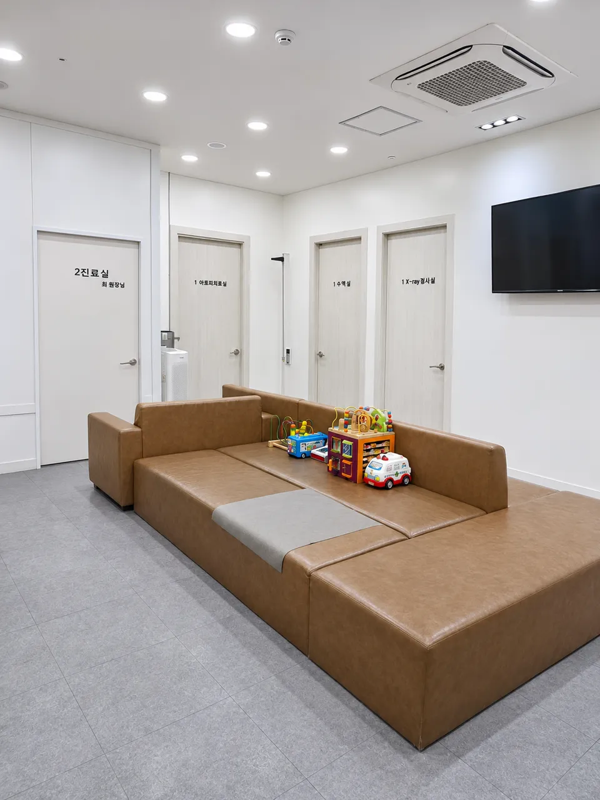

송도키즈 소아청소년과의원 · 인천 송도 세 아이 아빠의 마음으로 진료합니다
아이는 덜 힘들게, 진료는 더 꼼꼼하게. 글로벌캠퍼스푸르지오 204동 상가 2층에 있는 인천 송도 소아과입니다.
- 평일 저녁 6시 30분까지
- 토요일 오후 1시 30분까지
- 주차 무료

오늘 진료
진료 시간
공휴일과 임시 휴진은 전화로 확인해 주세요.
- 평일
- 오전 8:30 ~ 오후 6:30
- 토요일
- 오전 9:00 ~ 오후 1:30
- 점심시간
- 오후 1:00 ~ 2:00
- 휴진
- 일요일, 공휴일
진료와 클리닉
소아청소년과 진료와 함께 아래 다섯 가지를 따로 챙겨 봅니다. 성인 진료도 합니다.
저선량 X-ray
방사선량을 크게 낮춘 장비로 촬영합니다.
손끝 혈액검사
팔에서 피를 뽑지 않고 손끝 한 방울로 염증 검사를 합니다.
마루방 수액실
따뜻한 방에서 쉬면서 수액을 맞습니다.
소아용 시력검사기
시력검사표를 읽기 어려운 아이도 기기로 굴절 검사를 합니다.
병원 둘러보기
대기실 한가운데에 아이들이 올라앉아 놀 수 있는 넓은 소파가 있습니다. 진료실과 아토피치료실, 수액실, X-ray 검사실은 대기실에서 바로 이어집니다.


원장 인사말
저는 세 아이의 아빠입니다.
내 아이가 아프면 마음이 찢어집니다. 그 마음을 공감하며 제가 할 수 있는 최선을 다해 진료하겠습니다.
우리 아이 키, 얼마나 클까요?
부모의 키로 유전적 예측 키를 계산하고, 아이의 지금 키를 한국 소아청소년 성장도표와 비교해 볼 수 있습니다.
오시기 전에 확인하세요
진료 시간
평일 오후 6시 30분, 토요일 오후 1시 30분까지 진료
- 평일
- 오전 8:30 ~ 오후 6:30
- 토요일
- 오전 9:00 ~ 오후 1:30
- 점심시간
- 오후 1:00 ~ 2:00
- 휴진
- 일요일, 공휴일
공휴일과 임시 휴진은 전화로 확인해 주세요.
위치
인천광역시 연수구 송도문화로28번길 28
글로벌캠퍼스푸르지오 204동 상가 2층 201호
- 주차상가 지하 주차장, 시간과 상관없이 무료
- 지하철인천 1호선 테크노파크역이 가깝습니다
- 성인 진료어른도 진료받을 수 있습니다
자주 묻는 질문
진료 시간, 주차, 영유아 건강검진처럼 많이 물어보시는 내용입니다.
송도키즈 소아청소년과의원 진료 시간은 어떻게 되나요?
평일은 오전 8시 30분부터 오후 6시 30분까지, 토요일은 오전 9시부터 오후 1시 30분까지 진료합니다. 점심시간은 오후 1시부터 2시까지입니다. 일요일과 공휴일은 쉽니다.
주차할 수 있나요? 주차비가 있나요?
상가 지하 주차장을 시간과 상관없이 무료로 쓸 수 있습니다. Gate A로 들어와 오른쪽 지하 ‘상가 주차장’으로 내려오고, 차단기 앞에서 호출 버튼을 눌러 “송도키즈 소아청소년과 왔습니다”라고 말씀해 주세요.
영유아 건강검진은 언제 받나요?
생후 4개월부터 71개월(6세)까지 모두 일곱 차례 받습니다. 검진 기간은 생후 4~6개월, 9~12개월, 18~24개월, 30~36개월, 42~48개월, 54~60개월, 66~71개월입니다. 검진 시기 계산에 생년월일을 넣으면 차수별 기간을 날짜로 볼 수 있습니다.
어른도 진료받을 수 있나요?
네, 성인도 진료받을 수 있습니다. 성인 예방접종도 합니다.